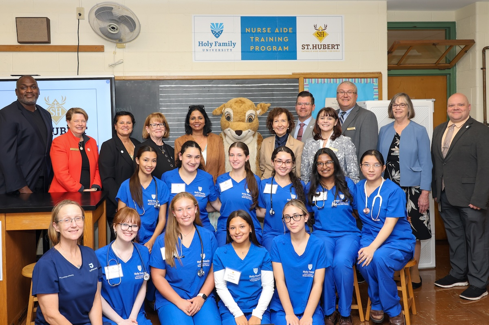
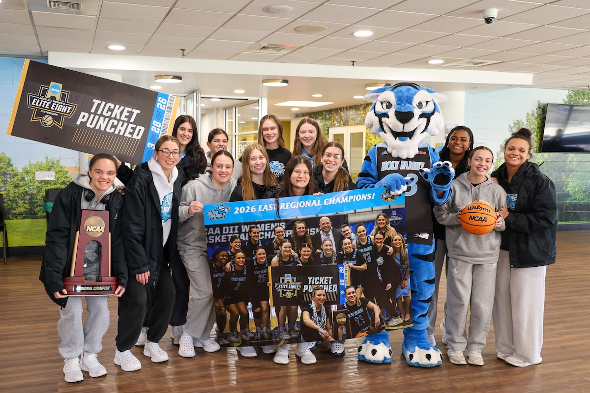

3,600+
Students enrolled
Undergraduate, graduate, and doctoral, on two campuses and online.
A sponsored ministry of the Sisters of the Holy Family of Nazareth — teneor votis.

Holy Family University, a ministry of the Sisters of the Holy Family of Nazareth, offers education in the liberal arts and professions.
The University educates students to assume lifelong responsibilities toward God, society, and self — inspired by the teachings of Jesus Christ, affirming Judeo-Christian values, and witnessing to the dignity of every human person and the interconnectedness of all people.
Everything else we do is in service of that single charge: the four schools, the two campuses, the residence halls, the eighteen NCAA teams, the seventy years of teachers and nurses and counselors and accountants we have sent into the world.
The Mission of Holy Family University. · Grounded in the founding charter of the Sisters of the Holy Family of Nazareth, 1954. · Full text at holyfamily.edu/mission.
Six numbers that show what kind of place this is, and what kind it isn't. Sources are listed below; everything is verifiable.
Undergraduate, graduate, and doctoral, on two campuses and online.
Average undergraduate class is fifteen students. Graduate seminars run smaller.
Arts & Sciences · Business & Technology · Education · Nursing & Health Sciences.
Chartered in 1954 by the Sisters of the Holy Family of Nazareth.
Every undergraduate graduates with at least one real-world placement on the transcript.
Recent graduates, within one year of commencement (Career Development Services).
Enrollment, student-faculty ratio, internship participation, and founding: HFU Fast Facts and the Office of Institutional Effectiveness. Career outcomes: Career Development Services first-destination survey. Full figures live on the Fast Facts page, including the complete degree count, athletics, and residential facilities.
The Sisters of the Holy Family of Nazareth open a college on Frankford Avenue in Northeast Philadelphia, in the same neighborhood where the congregation had been ministering for decades.
Holy Family expands beyond its founding configuration to grant the bachelor's degree across arts, sciences, and education. The exact charter date will be drawn from the University Archives.
The undergraduate college becomes co-educational and graduate programs open, building on Holy Family's longstanding role as a regional preparer of teachers and clinicians.
Holy Family is renamed a university and acquires the Newtown campus in Bucks County, expanding its physical footprint and giving the adult-learner programs a second front door.
Holy Family earns doctoral accreditation across counseling psychology, nursing, and education. The institution arrives at its current configuration of three doctoral programs.
Dr. Prisco begins a strategic plan focused on academic distinction, the student experience, and deepening the University's role as a regional partner. That work contributes to Holy Family's later Carnegie classification as an Opportunity University.
Niche.com names Holy Family the safest college in the city in back-to-back years. The recognition reflects campus culture and security operations, not marketing.
Holy Family is designated under the Carnegie Classification's Opportunity College & University category — recognizing institutions that enroll and successfully graduate students from every economic background. The designation confirms what the mission has said since 1954.
Holy Family enters its eighth decade with four schools, two campuses, 48 undergraduate concentrations, 12 master's degrees, 3 doctoral programs, and a Tier-1 ranking for social mobility. Still small enough that the dean knows your major and the chaplain knows your name.
Timeline drawn from the Holy Family University Archives, the Office of the President, and the published charter records of the Sisters of the Holy Family of Nazareth (Polish Province, U.S. branch). Dates are for the public charter or accreditation event, not internal milestones.
Family. Respect. Integrity. Service & Responsibility. Learning. Vision. Not decorative words — operating principles. Each one has a published definition, and each one shows up in the rhythm of an actual week on campus.
Holy Family creates an inclusive community that welcomes people of all backgrounds and faiths. The University attends to the spiritual, intellectual, social, emotional, and physical needs of every student, and builds the supports — academic, pastoral, residential — that make that care real rather than rhetorical.
Respect at Holy Family means openness to diverse perspectives and collaborative learning across difference. The Distinguished Writers Series, the School of Arts & Sciences seminars, and the residence-life programming are deliberately designed to put students in rooms with viewpoints, ethnicities, and lived experiences that are not their own.
Integrity is the commitment to truthfulness and to the responsible use of knowledge. At Holy Family that commitment is formed by the liberal arts and anchored by a Catholic moral foundation — the framework within which a nurse, a teacher, an accountant, or a counselor learns to tell the truth and to keep it.
The University motto lives here. Service and responsibility mean connecting what happens in the classroom to what the community actually needs. Nursing students rotate through underserved hospitals in the Delaware Valley. Education students teach in Philadelphia public schools. Civic engagement is the curriculum, not an extracurricular.
Learning at Holy Family is a dynamic exchange between traditional wisdom and contemporary knowledge. It happens in 13:1 classrooms, in a hundred percent of undergraduate careers through an internship or practicum, and in the experiential moments — lab work, rehearsal, rounds, research — where the distance between professor and student collapses.
Vision is the conviction that traditional wisdom and contemporary knowledge belong in the same room. Holy Family draws on a Judeo-Christian worldview as a foundation from which to engage the most contemporary problems — in healthcare, in education, in ethics, in technology — with clarity and with hope.
The six core values — Family, Respect, Integrity, Service & Responsibility, Learning, and Vision — are the published operating principles of the University, drawn from the founding charter of the Sisters of the Holy Family of Nazareth and affirmed by the Board of Trustees. Full definitions live on the Mission & Values page.
Forty-plus programs, from the associate to the doctorate, organized under four schools. Each has its own faculty, its own accreditations, and its own relationship to the regional industries that hire our graduates.
48 undergraduate program concentrations, 12 master's degrees, 3 doctoral programs, and 8 professional certifications — with flexible scheduling designed around today's working adult.
A short tour of the people accountable for the University's direction in its academic, fiduciary, and pastoral work. Names link to fuller biographies on the Leadership page.
The 6th President of Holy Family University. A career in Catholic higher-education leadership, with appointments preceding Holy Family at institutions in the same tradition.
Dr. Prisco leads Holy Family under a mission whose language she uses frequently in her own: that Holy Family is “an institution whose mission is designed to transform students' lives.” Her tenure has been organized around deepening academic distinction across the four schools, strengthening both the residential and adult-learner experience, and putting the University on a financial footing that can carry the mission for the next seventy years rather than the next seven.
Under her presidency, Holy Family has received the Carnegie classification as an Opportunity College and University, been ranked Tier 1 for social mobility by Third Way, and been named the safest college in Philadelphia in back-to-back years by Niche.com.
“I am bound by my responsibilities. That is our motto and our mandate — to the student who sits in front of us today, to the communities our graduates return to tomorrow, and to the seven decades of Sisters, faculty, and alumni who made the work possible.” Anne M. Prisco, Ph.D. · the language here draws on the University motto teneor votis and the published presidential record.
The President's Cabinet meets weekly. Each member is responsible for a major operational area and reports to the President. The current roster, as published on the University's leadership page.
Leads the four schools, faculty appointments, curriculum, academic policy, and the Honors Program. The provost seat of the University.
Liaison to the Sisters of the Holy Family of Nazareth and steward of the University's Catholic identity across every school and department.
Responsible for the undergraduate, graduate, and adult-learner enrollment funnels, admissions operations, and financial-aid leveraging strategy.
Oversees residence life, wellness, student conduct, athletics, and orientation; serves as University Title IX Coordinator.
CFO of the University. Oversees budget, facilities, human resources, investments, and the Newtown campus operations.
Leads integrated marketing, communications, brand, digital experience, and public relations across both campuses.
Stewards the philanthropy, alumni, and corporate-partnership relationships that fund scholarships, capital projects, and the annual fund.
Coordinates the Office of the President, strategic initiatives, and cross-cabinet operations; serves as corporate secretary to the Board of Trustees.
Oversees institutional research, accreditation reporting, information technology, cybersecurity, and digital-learning platforms.
Roster as published on the holyfamily.edu/about/leadership page. Each cabinet seat links through to its full biography on production.
The Board of Trustees holds the University's fiduciary, strategic, and legal accountability. It includes Sisters of the Holy Family of Nazareth, alumni, regional civic leaders, and senior practitioners in healthcare, business, education, and law. The current membership, drawn from the published Board roster.
Three current trustees are Sisters of the Holy Family of Nazareth, preserving the formal link between the founding congregation and the University's governance.
Trustees with ' 70, ' 74, ' 80, ' 82, ' 85, ' 90, ' 97, ' 04, and M'03 after their names: the Board draws deeply from graduates at every decade.
The full Board meets on a quarterly schedule. The Executive Committee meets between Board sessions, and standing committees as the work requires.
Roster reflects the current Board of Trustees as published at holyfamily.edu/about/leadership. On production, each name links through to a full biographical entry.
The President's Advisory Council brings senior alumni and friends of the University into the strategic conversation. The Council does not govern, but advises on enrollment, philanthropy, regional partnerships, and emerging program areas.
Members from the Delaware Valley health-system network, advising on clinical placement and the Nursing & Health Sciences agenda.
Practitioners who advise on the School of Business & Technology, internships, and employer partnerships.
Counsel on the School of Education's PreK-12 partnerships and teacher-preparation pipeline.
Civic leaders who help connect the University to the neighborhoods it serves on both campuses.
Alumni whose careers exemplify the mission and who advise the President directly on alumni engagement.
Members from the Archdiocese of Philadelphia and the CSFN community, supporting mission integration.
Anne Prisco is the sixth president of Holy Family University. Her predecessors include Sisters of the Holy Family of Nazareth — the congregation that founded the institution in 1954 — and lay leaders who guided the transition from Holy Family College to Holy Family University in 2002. The complete roster, with full tenure dates and academic credentials, is maintained by the University Archives and will be wired through to this panel on production from the published Archives record.
Anne Prisco's appointment as the 6th President is verified on the University's published leadership page. Earlier names, ordinal positions, and exact tenure dates are held in the University Archives and will be sourced directly from the Archives on production rather than reconstructed here.
Four representative recognitions, each from a third-party source. The University does not pay for placement; we list the citing organization next to each.
The Carnegie Classification recognizing institutions that enroll and successfully graduate students from every economic background. Holy Family carries this designation under the 2025 classification set. Source · The Carnegie Classification of Institutions of Higher Education.
Recognition reflects campus-safety operations, residence-hall security, and Clery-Act crime data on both campuses. Source · Niche.com.
Holy Family is ranked a Tier 1 institution for moving students from lower-income backgrounds into higher earning brackets within ten years of graduation. Source · Third Way.
Recognition for graduate earnings relative to in-state institutional cost. Source · The Chronicle of Higher Education.
Holy Family has been named one of America's Best Colleges based on educational quality, affordability, and alumni outcomes. Source · MONEY Magazine.
Based on net price relative to graduate outcomes among all private, four-year institutions in the Philadelphia region. Source · Niche.com.
Recognition cards represent the most recent published rankings as of academic year 2024-25. Accreditation list reflects the current standing as posted on the Holy Family Accreditation page; disclosures and review cycles are available there in full.
The Philadelphia campus is the historic home: residential, urban, and the centre of undergraduate life. Newtown is the Bucks County extension: more graduate, more adult-learner, easier parking. Faculty, programs, and degrees move freely between them.

A wooded campus on Frankford Avenue in Northeast Philadelphia. The historic home, where most undergraduates live, learn, eat, and play.

A suburban campus in the Bucks County township of Newtown. Built around the adult-learner and graduate programs, with a quieter footprint and ample parking.
Holy Family is, by design, a regional university. It is a place where the kid from Mayfair and the kid from Bensalem and the kid from Trenton can find each other in the same residence hall.
Most undergraduates come from a zip code within fifty miles of the University.
A majority of undergraduates were raised in the city we serve.
A community that looks like the neighborhood the University was founded to serve.
Cross-river commuters and Newtown campus students.
Of full-time undergraduates. At least ten percent off published tuition, often substantially more.
A reflection of the strong nursing, education, and counseling pipelines.
A Catholic university, open to students of every faith and none.
Recent graduates, within one year of commencement.
Composition figures are drawn from the most recent HFU Fast Facts publication and the Office of Institutional Effectiveness Fall census. Alumni outcome figure from the Career Development Services first-destination survey, Class of 2023.
A faculty member, an alumna, and a Sister of the Holy Family of Nazareth. Three perspectives on what this place is. Quotes are illustrative composites for this design draft; the live site will run real attributed interviews.
An institution whose mission is designed to transform students' lives. That is the assignment, and the standard by which we measure our own work.
One hundred percent of our undergraduates graduate with at least one internship or practicum on the transcript. Not a claim — a count. The School of Nursing has built placements across every major health system in the Delaware Valley because that is how our students learn medicine, by doing it.
The Sisters founded this college so that the daughters of the neighborhood could become teachers, nurses, and citizens. Seventy-one years later, we are still doing the same work. Only the names of the students have changed.
Quotes draw on published presidential and academic-affairs statements. On production, each block will pull the verified, linked source from the University communications archive.

An hour on campus tells you more than any brochure. Pick a day, bring a parent or a friend, and we will walk you through the buildings, the chapel, the residence halls, and the nearest coffee.